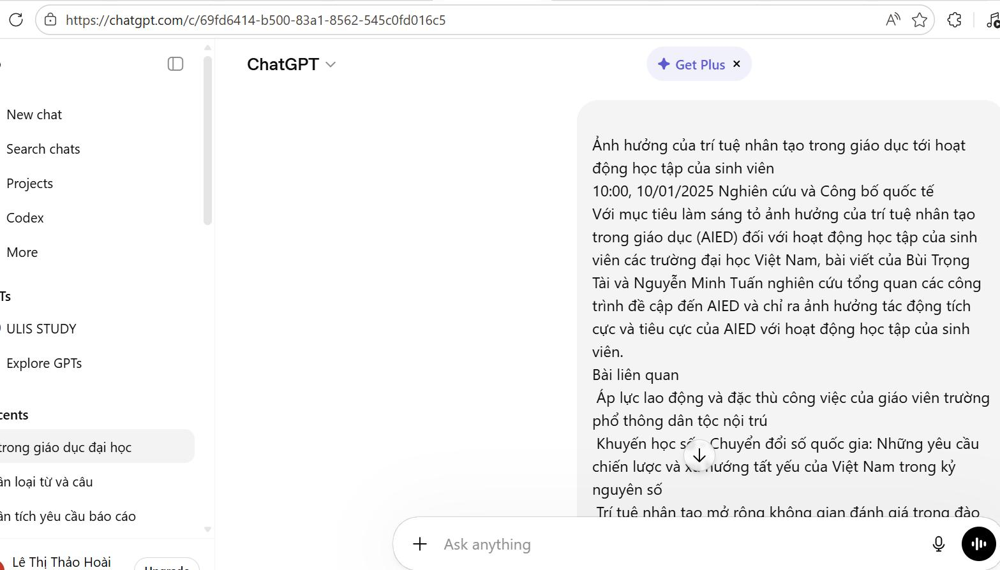
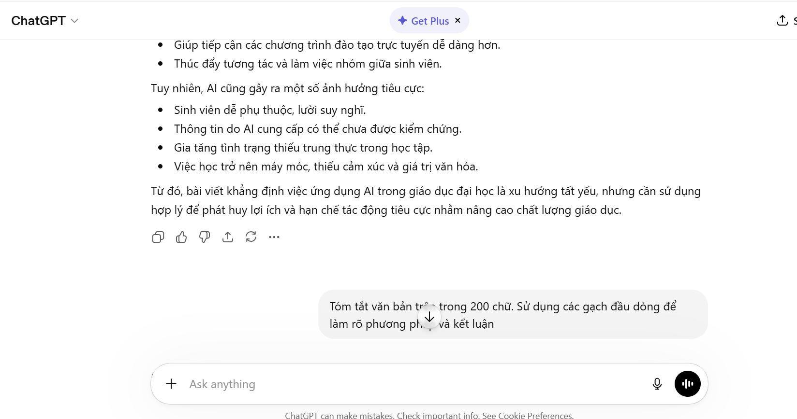
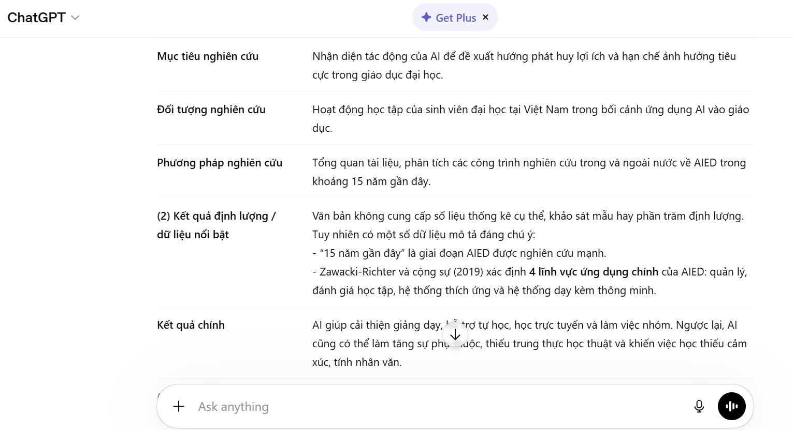
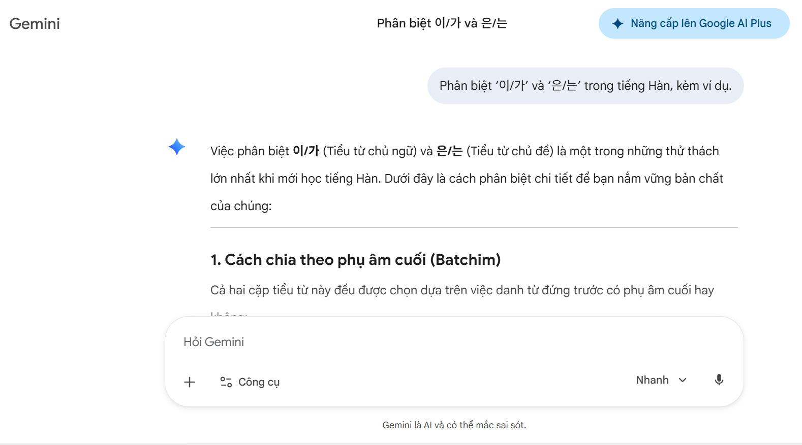
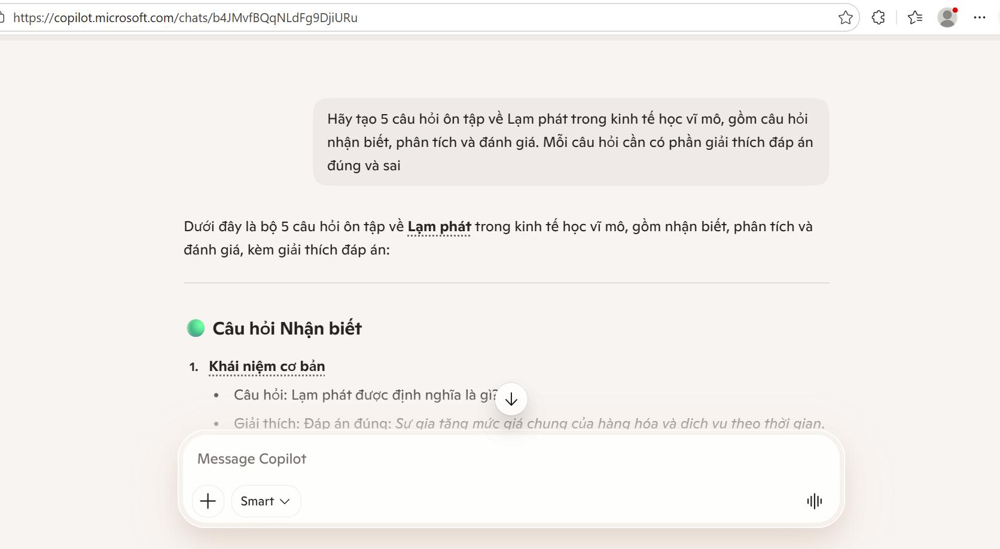

BA TÁC VỤ HỌC TẬP
Cấu trúc bài làm
Bài 3 thử nghiệm việc viết prompt cho ba tác vụ: tóm tắt tài liệu, giải thích khái niệm phức tạp và tạo câu hỏi ôn tập. Thay vì dồn ảnh vào một gallery rời rạc, phần dưới đây nhóm minh chứng theo từng cụm công việc để phản ánh đúng tiến trình thao tác.
Ba mức độ prompt
- Prompt cơ bản: ngắn gọn, trực tiếp.
- Prompt cải tiến: có cấu trúc, yêu cầu rõ hơn.
- Prompt nâng cao: áp dụng role prompting, few-shot hoặc hướng dẫn chi tiết.
Mục tiêu đánh giá
- So sánh chất lượng đầu ra.
- Phân tích vì sao prompt hiệu quả hơn.
- Rút ra nguyên tắc viết prompt tốt.
MINH CHỨNG THEO NHÓM
Quá trình thử nghiệm
Tác vụ 1: Tóm tắt tài liệu học thuật
Các ảnh đầu tiên ghi lại quá trình thử prompt cho tác vụ tóm tắt: từ prompt cơ bản đến phiên bản cụ thể hơn, sau đó đánh giá lại mức độ đầy đủ của kết quả.

Tác vụ 2: Giải thích khái niệm phức tạp
Chuỗi ảnh tiếp theo cho thấy cách đặt prompt để AI giải thích khái niệm theo mức độ ngày càng rõ ràng, có ví dụ và có cấu trúc hơn.

Tác vụ 3: Tạo bộ câu hỏi ôn tập
Ở tác vụ thứ ba, prompt được tinh chỉnh để tạo câu hỏi theo từng mức độ nhận thức, phù hợp với mục tiêu ôn tập của người học.

So sánh kết quả trên công cụ AI khác
Từ giữa bài trở đi, ảnh minh chứng chuyển sang kết quả trên Gemini để đối chiếu chất lượng đầu ra, từ đó giúp phần so sánh khách quan hơn.

Rút ra khung nguyên tắc viết prompt
Các ảnh cuối bài cho thấy quá trình tổng hợp, chỉnh sửa và chuẩn hóa các nguyên tắc viết prompt hiệu quả để đưa vào phần kết luận.

KẾT LUẬN
Nguyên tắc rút ra
Xác định rõ mục tiêu đầu ra.
Gán vai trò phù hợp cho AI.
Đưa ví dụ khi cần định hướng.
Yêu cầu cụ thể về cấu trúc, độ dài.
So sánh kết quả và cải tiến prompt.